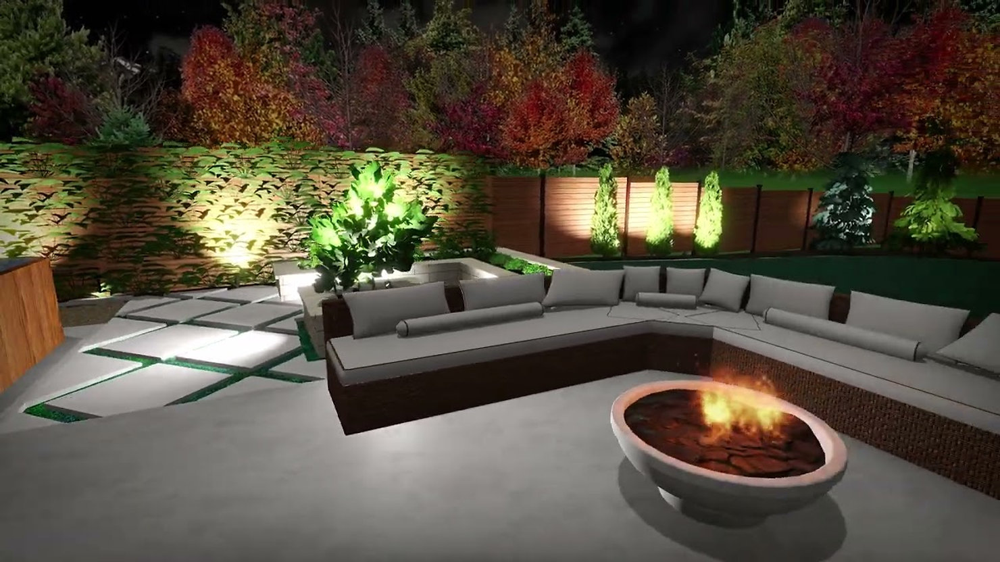

What Are the Key Elements of Good Landscaping Design?

The key parts of good landscaping design include careful planning, choosing plants that fit the local climate, creating focal points, adding hardscape features, and ensuring proper lighting. Additionally, using sustainable practices like native plants and efficient irrigation, and balancing color, texture, and size are important for a beautiful and cohesive outdoor space.
Landscaping design is an art and science, blending aesthetics and functionality to transform outdoor spaces into havens of beauty and utility. Whether you have a cozy backyard or a sprawling garden, understanding the key elements of good landscaping design is essential to creating an inviting and harmonious environment.
At Ironhills Landscaping, we take pride in turning your outdoor dreams into reality with a passion for design and installation services. From cozy corners to sprawling gardens, let's work together to make your vision a reality. In this article, we'll explore these crucial elements and how they can be effectively incorporated into your landscaping projects.
Key Takeaways:
Lines: Guide movement, highlight features, and create visual interest.
Form: Shapes of plants and hardscape elements, providing balance and harmony.
Color: Adds visual interest and seasonal variety, setting the mood.
Texture: Adds depth and dimension through varied surface qualities.
Scale: Ensures proportionality and balance among elements.
Mass: Balances visual weight and size of objects.
Void: Creates openness and unifies components.
Key Elements of Good Landscaping Design
1. Line
Lines play a fundamental role in landscaping design. They guide the eye, control movement, and establish the structure of the landscape. Lines can be straight, curved, horizontal, or diagonal, and they can be created using hardscape materials such as pathways, fences, and garden beds, or through vegetation. Straight lines convey formality and order, while curved lines create a sense of informality and flow. Effective use of lines can highlight focal points and create a sense of direction and continuity within the space.
2. Form
Form refers to the shape and structure of plants and hardscape elements. It includes various shapes such as upright, groundcover, round, and freeform. The form is crucial for creating a balanced and harmonious design. Different forms can be used to achieve contrast and interest or to blend elements seamlessly. For instance, the upright form of trees can provide vertical interest, while groundcover plants can create a sense of continuity.
3. Color
Color is a powerful element in landscaping design, capable of evoking emotions and setting the mood of the space. The careful selection of plant colors can create visual interest and seasonal variety. Consideration of the four seasons is essential to ensure color throughout the year. Hardscape elements, such as paving stones and furniture, also contribute to the overall color scheme. Warm colors (reds, oranges, yellows) can make spaces feel more inviting, while cool colors (blues, greens, purples) can create a calming effect.
4. Texture
Texture in landscaping refers to the surface quality of plants and hardscape materials. It encompasses the coarseness or fineness of leaves, bark, and other plant parts. Varying textures add depth and dimension to the landscape, making it more visually appealing. Combining different textures can create contrast and interest. For example, the rough texture of a stone wall can be complemented by the smoothness of nearby leaves or flowers.
5. Scale
Scale relates to the size of elements in relation to one another and the overall space. It is essential to consider the proportion of plants and hardscape features to ensure they complement the size of the home, yard, and existing landscape features. Varying heights and widths can enhance the overall design composition, creating a sense of balance and harmony. Proper scaling helps in achieving a cohesive look where no single element overwhelms the others.
6. Mass
Mass refers to the visual weight or size of objects within the landscape. It is important to balance the mass of different elements to create a harmonious design. This includes the size of planting beds, patios, houses, and individual plants. Balanced mass ensures that no single component dominates the space, creating a cohesive and aesthetically pleasing environment.
7. Void
Voids, or empty spaces, are also crucial in landscaping design. They encompass particular areas or forms and serve to balance and unite individual components. Intentionally designing voids can create a more cohesive and visually appealing landscape. These empty spaces provide a sense of openness and can enhance the overall flow of the design.
The Role of Sustainability in Landscaping
Sustainable landscaping involves creating designs that are environmentally friendly and resource-efficient. This approach minimizes the negative impact on the environment by using native plants, conserving water, and reducing the use of chemical fertilizers and pesticides. Sustainable landscaping also promotes biodiversity and enhances the natural ecosystem. At Ironhills Landscaping, we integrate sustainable practices to ensure that your outdoor space is not only beautiful but also environmentally responsible.
How to Choose the Right Plants for Your Climate
Selecting the right plants for your climate is essential for a thriving landscape. Native plants are often the best choice, as they are adapted to the local conditions and require less maintenance. Consider the soil type, sunlight exposure, and water availability when choosing plants. At Ironhills Landscaping, we help you choose the perfect plants that will flourish in your specific environment, ensuring a lush and vibrant garden all year round.
Hardscaping vs. Softscaping: Finding the Right Balance
Hardscaping involves the use of non-living elements such as stone, wood, and concrete to create pathways, patios, and walls. Softscaping includes living elements like plants, trees, and flowers. Achieving the right balance between hardscaping and softscaping is crucial for a cohesive and functional landscape design. Ironhills Landscaping specializes in blending these elements seamlessly to create stunning outdoor spaces that meet your needs and preferences.
The Importance of Seasonal Landscaping Maintenance
Regular maintenance is key to preserving the beauty and functionality of your landscape throughout the year. Seasonal tasks such as pruning, mulching, and fertilizing are essential to keep plants healthy and vibrant. Ironhills Landscaping offers comprehensive maintenance services to ensure your outdoor space remains in top condition, no matter the season.
Creating Outdoor Living Spaces: Patios, Decks, and More
Outdoor living spaces extend your home's living area and provide a place for relaxation and entertainment. Patios, decks, outdoor kitchens, and fire pits are popular features that can enhance your outdoor experience. Ironhills Landscaping designs and builds custom outdoor living spaces that reflect your style and enhance your lifestyle, making your backyard a true extension of your home.
FAQs
1. What are the essential elements of landscaping design?
The essential elements include line, form, color, texture, scale, mass, and void. These elements work together to create a visually appealing and functional outdoor space.
2. How do I choose the right plants for my landscape?
Consider your climate, soil type, sunlight exposure, and water availability. Native plants are often the best choice as they are adapted to local conditions and require less maintenance.
3. What is the difference between hardscaping and softscaping?
Hardscaping involves non-living elements like stone and wood, while softscaping includes living elements like plants and trees. A balanced combination of both is essential for a cohesive landscape design.
4. How can I make my landscape sustainable?
Incorporate native plants, conserve water, reduce chemical use, and promote biodiversity. Sustainable landscaping practices minimize environmental impact and enhance the natural ecosystem.
5. Why is seasonal maintenance important for landscaping?
Seasonal maintenance tasks such as pruning, mulching, and fertilizing keep plants healthy and vibrant. Regular maintenance ensures the longevity and beauty of your landscape.
Transform Your Outdoor Space with Ironhills Landscaping
Creating a stunning and functional landscape requires careful planning and a deep understanding of design elements. At Ironhills Landscaping, we're dedicated to bringing your outdoor dreams to life.
Contact us now at Ironhills Landscaping! Our team of experts is here to help you create the landscape of your dreams. With our passion for design and commitment to excellence, we ensure your vision becomes a reality. Don't wait any longer – reach out to us now and let's get started on your landscaping project. Contact us now for a consultation!
Recent Posts


If you live in Lehi, there's a good chance your yard isn't perfectly flat. Newer neighborhoods near Traverse Mountain, homes along the foothills, and lots that step down toward the street all share th